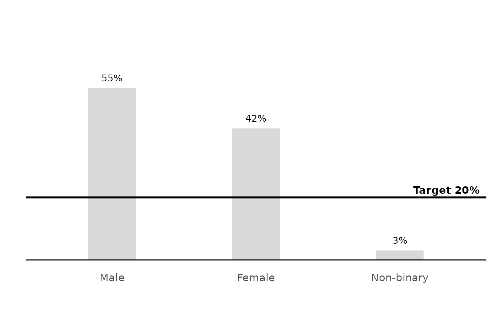

Adds a reference line (and optional label) at a single value – the "you are here" marker used on the NPS and quality gauges.
Usage
mark_value(
plot,
value,
axis = c("x", "y"),
colour = "black",
linewidth = 1,
label = NULL,
...
)Arguments
- plot
A ggplot object.
- value
Numeric position of the marker.
- axis
Axis the value is on:
"x"(default, draws a vertical line) or"y"(horizontal line).- colour, linewidth
Line appearance.
- label
Optional text label drawn at the marker.
- ...
Passed to
ggplot2::annotate()for the label; overrides the default justification, which keeps the label inside the panel next to the marker line.
See also
Other decisions:
annotate_bands(),
bands_rating_3(),
rescale_bands()
Examples
# a target line across the percentage axis of a bar chart
calc_percentage(podracing_survey, demo_gender) %>%
plot_bars() %>%
mark_value(20, axis = "y", label = "Target 20%")
